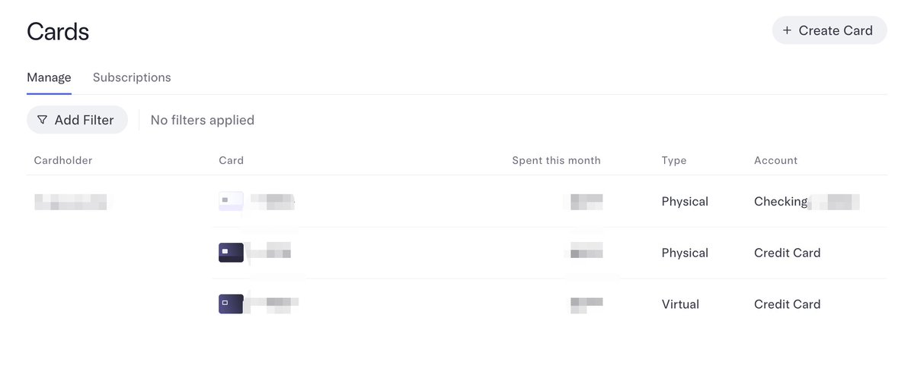

许白🔜嘉兴/杭州
@xubai_01
RT @fiapp_pro: 开港卡这种话题，完全利用了老中的根里的对资源稀缺的恐惧，外汇管制、怕钱出不去，再不开就关门上不了车了，才导致铺天盖地的水文吸流量。
如果你没钱，你只需要开一些 u 卡，例如 bybit 的卡来刷，各种服务都能用，跑腿去开港卡没啥用。… https…

索螺丝
@fiapp_pro
开港卡这种话题，完全利用了老中的根里的对资源稀缺的恐惧，外汇管制、怕钱出不去，再不开就关门上不了车了，才导致铺天盖地的水文吸流量。
如果你没钱，你只需要开一些 u 卡，例如 bybit 的卡来刷，各种服务都能用，跑腿去开港卡没啥用。 https://t.co/dW97rax05n